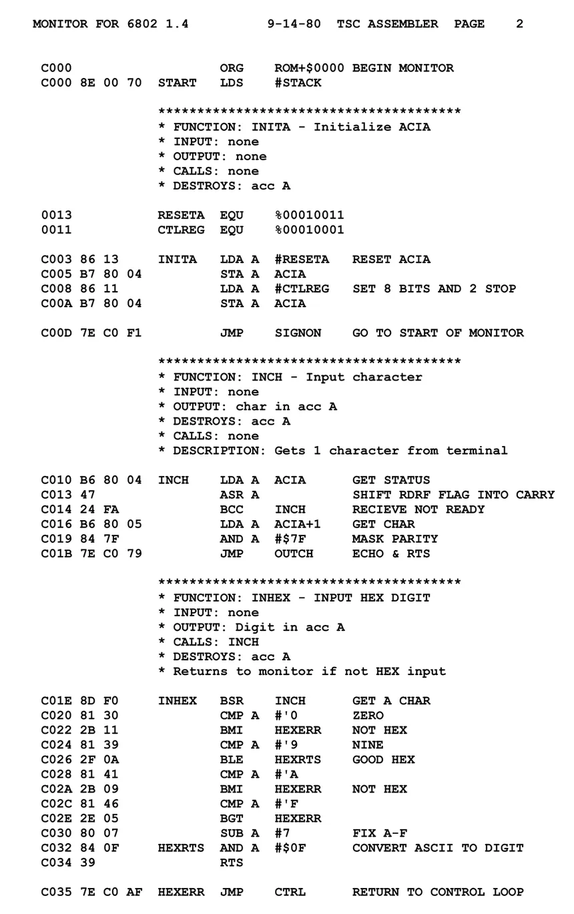

Introduction

Le Backend
Le Backend est la partie du compilateur qui s'occupe de générer le code objet. C'est-à-dire que c'est lui qui va transformer le code source en un code objet.
Un exemple
Imaginons que nous ayons un code source écrit en C. Le Backend va transformer ce code source en un code objet écrit en langage machine (binaire). Ce code objet pourra ensuite être exécuté par une machine.
Les étapes du Backend
Le Backend est composé de plusieurs étapes. Voici les principales:
- La génération de code intermédiaire
- L'optimisation du code intermédiaire
- La génération de code objet
Les outils du Backend
Pour réaliser ces étapes, le Backend utilise plusieurs outils. Parmi eux, on peut citer:
- Un générateur de code intermédiaire/li>
- Un optimiseur de code intermédiaire
- Un générateur de code objet
LLVM
LLVM est un projet open-source qui fournit une suite de compilateurs modulaires et réutilisables. Il est utilisé par de nombreux langages de programmation pour générer du code objet.
Pour en savoir plus sur LLVM, voici leur site web: llvm.org
Exemple plus concis
Si nous reprenons l'AST genere par le Frontend sur la page précédente, nous pouvons continuer à le transformer pour obtenir un code objet. Exemple:
#include <stdio.h>
int main() {
printf("Hello, World!\n");
return 0;
}

Etant donne que ce code est vraiment simple, nous allons l'abstraire pour le convertir en assembleur ARM:
.text ;; section de code (text) executable
.global _start ;; point d'entree du programme pointant sur _start
_start: ;; etiquette _start
mov r0, #1 ;; code de sortie
ldr r1, =message ;; adresse du message
ldr r2, =len ;; longueur du message
mov r7, #4 ;; appel systeme pour ecrire le message
swi 0 ;; interruption logicielle
mov r7, #1 ;; appel systeme pour terminer le programme
swi 0 ;; interruption logicielle (fin du programme)
.data ;; section de donnees (data) lisibles et modifiables
message: ;; etiquette message
.asciz "hello world\n" ;; message
len = .-message ;; longueur du message
Conclusion
Le Backend est la partie du compilateur qui s'occupe de générer le code objet. C'est-à-dire que c'est lui qui va transformer le code source en un code objet. Pour cela, il utilise plusieurs étapes et outils, dont la génération de code intermédiaire, l'optimisation du code intermédiaire et la génération de code objet.